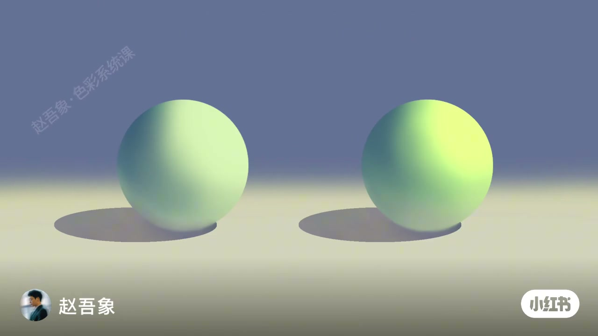
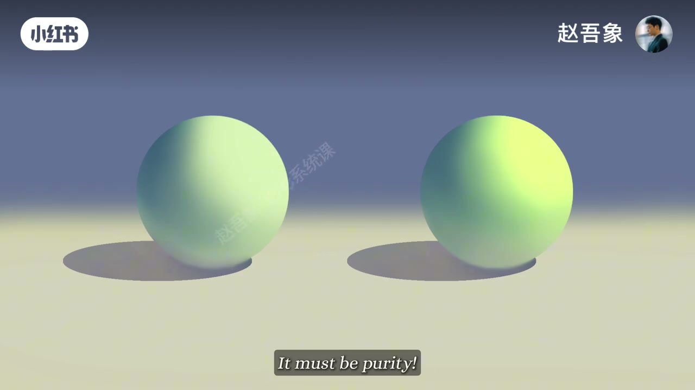
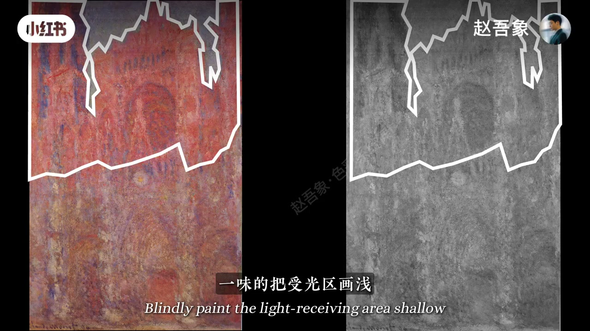
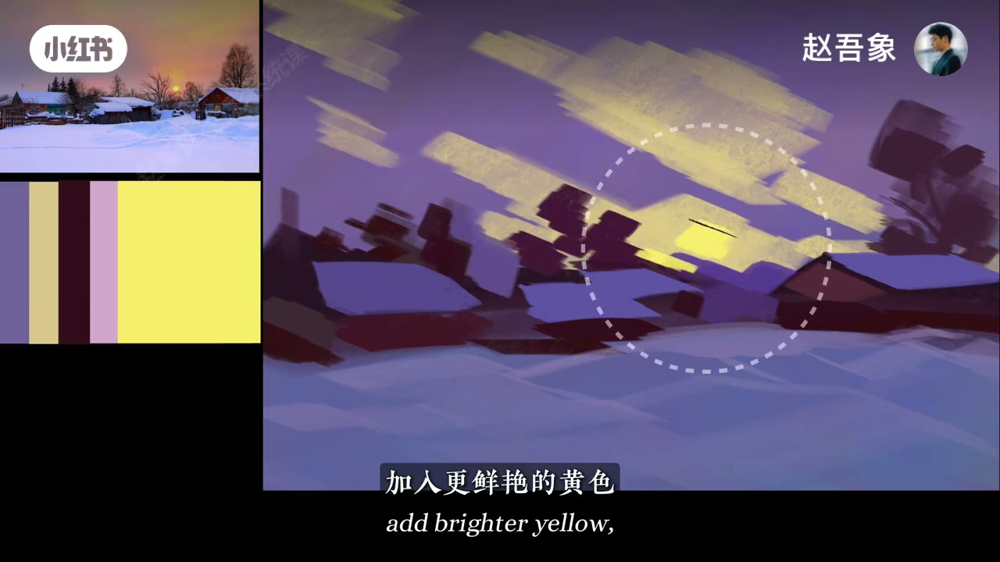
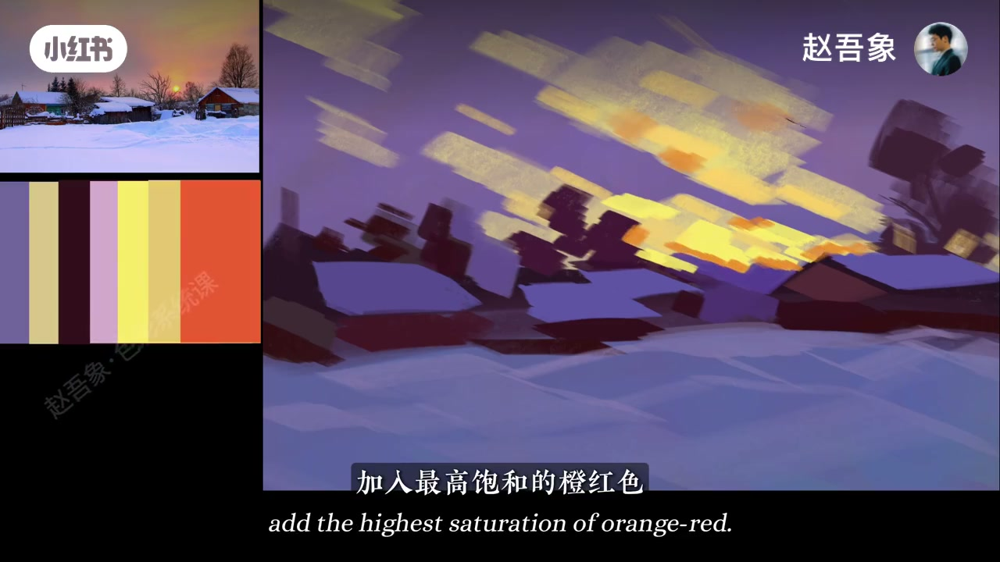

内容要点
赵吾象接着讲「画光」第三招：在明度、冷暖之外，纯度也能增强光感。双球实验证明明度与冷暖接近时，更鲜艳的一侧光感更强；莫奈画鲁昂大教堂受光区靠提纯而非一味画浅。雪村实操把中心黄、云缘橙红、天空蓝紫的饱和度拉满，光感立刻鲜活——耀眼不必靠加白。
知识结构
右球光感更强：明度、冷暖接近，差在纯度。纯度也能增强光感。
鲁昂大教堂受光区不一味画浅，而提高纯度，更鲜活炽热。画光三思路：明度、冷暖、纯度。
蓝基调→浅黄云→深紫红树→暖粉雪；中心鲜黄+橙黄冷暖；云缘橙红与天空蓝紫拉满纯度。
光感不只靠提亮：在明度与冷暖之后，把关键受光区的纯度拉高，往往比加白更耀眼、更鲜活。
00:00-00:20哪个球光感更强？答案是纯度
开场两颗浅绿球体对照：观众答右边更强。排除法——右边明度一样、冷暖也差不多，一定是纯度。作者确认：「是的，纯度也能增强光感。」
00:04／00:16 双球画面把「不加白却更耀眼」做成可指认的实验，而不是口号。


00:20-00:44莫奈鲁昂：受光区提纯，不一味画浅
转到鲁昂大教堂（ASR「鲁王」）：莫奈（ASR「木乃」）没有一味把受光区画浅，而是让这块颜色更鲜艳、纯度更高，于是更鲜活炽热。00:25 彩／灰双联与白线圈标出讨论的受光区。
小结：到这里已讲三种画光思路——明度、冷暖，和今天的纯度。

00:44-01:38雪村实操：中心鲜黄 + 高饱和冷暖对拉
实操步骤：先用蓝色出大基调，浅黄色块概括云，然后给树用最深的紫红色（ASR「乌合树」按步骤校正），雪地受光用暖粉色。关键一击：在视觉中间加入更鲜艳的黄色，让明度对比最强；再加橙黄色强化冷暖对比。
继续给云缘最高饱和橙红，旁边天空加入最纯蓝紫——不止冷暖，纯度也被拉到最大（ASR「也别」按语境作「也被」），光感一下鲜活。理解原理后，画光就是这么简单；下期疑难留给评论区。


完整转录（30段）
以下文本由 Whisper medium 模型自动转录，可能存在少量识别误差，已尽可能修正。
看一看,哪个球体的光感更强?
嗯,右边的
为什么?
因为右边的明度一样
那冷暖也差不多啊
一定是纯度
是的,纯度也能增强光感
来看看这幅鲁王大教堂
木乃没有一味地把受光区化浅
而是让这块颜色更鲜艳,纯度更高
所以啊,更让人感觉鲜活和炽热
到这里,我们其实已经讲了三种化光的思路
明度、冷暖和今天说的纯度
话不多说,我们来实操一下
先用蓝色,出一个大的基调
再用浅黄色块,概括出云的形状
让乌合树用最深的紫红色加下去
雪地受光的地方是暖粉色
最关键的来了
在视觉中间加入更鲜艳的黄色
让这个地方明度对比最强
再加入橙黄色,用来强化冷暖对比
继续,我们给云的边缘加入最高饱和的橙红色
旁边的天空,加入最纯的蓝紫
你看,不止冷暖
纯度此刻也别拉到最大
光感一下就鲜活起来了
你看,理解了原理,化光就是这么简单
下期想要破解哪个色彩的疑难杂症呢?
评论区告诉我